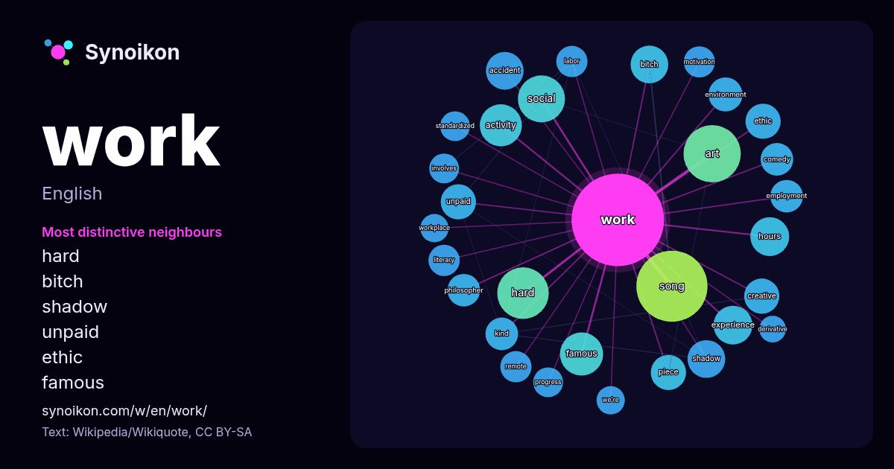

English · popular word
work
The words found around it in 1755 instances from Wikipedia, Wikiquote, Hacker News.

Most distinctive neighbours
- hard 21×
- bitch 17×
- shadow 15×
- unpaid 15×
- ethic 13×
- famous 13×
- accident 13×
- creative 12×
- philosopher 11×
- motivation 11×
- song 11×
- standardized 11×
- employment 10×
- remote 10×
- social 9.7×
- experience 9.6×
- workplace 9.5×
- environment 9.3×
- we're 9.3×
- activity 9.1×
× = how many times more often than in general Wikipedia text.
Most frequent neighbours
- song 57
- american 45
- art 37
- hard 30
- album 28
- film 28
- team 28
- social 25
- best 24
- life 24
- term 22
- famous 21
- activity 20
- system 18
- experience 17
- hours 17
- men 17
- accident 16
- bitch 16
- right 16
In context
- Work may refer to: Work (human activity), intentional activity people perform to support themselves Wikipedia snippets · Work
- Proof of work (also written as proof-of-work, and abbreviated PoW) is a form of cryptographic proof in which one party (the prover) proves to others (the Wikipedia snippets · Proof of work
- A creative work is a manifestation of creative effort in the world through a creative process involving one or more individuals. The term includes fine Wikipedia snippets · Creative work
- Not Suitable for Work is an American comedy television series created by Mindy Kaling. Created by Mindy Kaling, the series stars Ella Hunt, Avantika Vandanapu Wikipedia snippets · Not Suitable for Work
- Social work is an academic discipline and practice-based profession concerned with meeting the basic needs of individuals, families, groups, communities Wikipedia snippets · Social work
- Work It may refer to: "Work It" (Missy Elliott song), 2002 "Work It" (Nelly song), 2003 song featuring Justin Timberlake Work It (film), a 2020 American Wikipedia snippets · Work It
- The Work may refer to: The Great Work, an alchemical term for the process of working with the prima materia to create the philosopher's stone The Fourth Wikipedia snippets · The Work
- In science, work is the energy transferred to or from an object via the application of force along a displacement. In its simplest form, for a constant Wikipedia snippets · Work (physics)
More words
- art
- autumn
- bell
- bread
- bridge
- cat
- city
- climate
- clock
- death
- desert
- dog
- family
- food
- forest
- garden
- god
- gold
- health
- heart
- history
- honey
- horse
- island
- language
- life
- map
- mirror
- money
- mother
- mountain
- nature
- power
- rain
- road
- salt
- science
- shadow
- silence
- song
- star
- storm
- summer
- tea
- time
- train
- truth
- water
- winter
Precomputed on 2026-10-09 with default settings (±5 words, medium corpus). The interactive map can refresh it with live data.